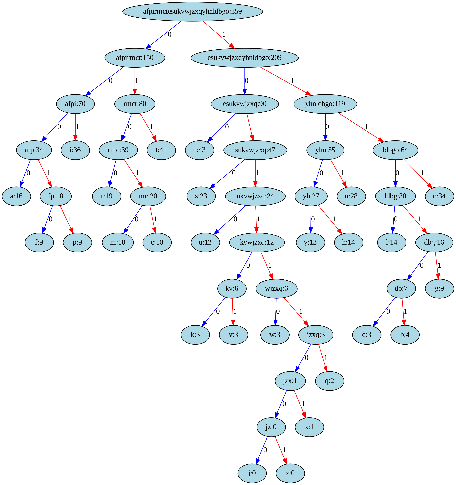

Huffman coding for data compression to optimize memory and transmittion time.
Information Theory
Coding
Huffman coding
Author
Kishan Ved
Published
August 27, 2023
Unveiling Huffman Coding’s Data Compression Magic
In the world of information and data, efficiency is paramount. As we generate and consume vast amounts of digital content, the need to transmit and store this data in the most efficient manner has led to the development of various data compression techniques. One such remarkable technique is Huffman coding, which not only reduces data size but also plays a crucial role in modern data storage, transmission, and encryption. In this blog, we will delve into the mechanics of Huffman coding, its significance, and its applications across various domains.
Need for data compression
In a world inundated with data, the efficiency of data storage and transmission has become paramount. Whether it’s sending files over the internet, storing data on devices with limited space, or even optimizing database structures, the ability to compress data without significant loss of information has become essential. A naive way would be to assign the same number of bits to every letter, but Huffman coding provides an optimal solution.
Huffman Coding
Huffman coding, named after its inventor David A. Huffman, is a variable-length prefix coding technique used for data compression. Unlike fixed-length codes, where each symbol is represented by the same number of bits, Huffman coding assigns shorter codes to frequently occurring symbols and longer codes to less frequent symbols. This unique property reduces the overall length of the encoded data.
Algorithm
The Huffman coding algorithm follows a simple yet powerful process:
Frequency Calculation:
Determine the frequency of each symbol (character) in the data to be encoded.
Consider this long quote by Albert Einstein:
Life is like riding a bicycle. To keep your balance, you must keep moving. The important thing is not to stop questioning. Curiosity has its own reason for existing. One cannot help but be in awe when contemplating the mysteries of eternity, of life, of the marvelous structure of reality. It is enough if one tries merely to comprehend a little of this mystery each day. The important thing is not to stop questioning; never lose a holy curiosity.
s ="Life is like riding a bicycle. To keep your balance, you must keep moving. The important thing is not to stop questioning. Curiosity has its own reason for existing. One cannot help but be in awe when contemplating the mysteries of eternity, of life, of the marvelous structure of reality. It is enough if one tries merely to comprehend a little of this mystery each day. The important thing is not to stop questioning; never lose a holy curiosity."s = s.lower()s_len =0arr = [0]*26d = {}for i inrange(len(s)):if(s[i]==' 'or s[i]==','or s[i]=='.'or s[i]==';'):continue s_len+=1 arr[ord(s[i])-ord('a')]+=1for i inrange(len(arr)):print(chr(i+ord('a')), arr[i])if arr[i]!=0: d[chr(i+ord('a'))] = arr[i]
a 16
b 4
c 10
d 3
e 43
f 9
g 9
h 14
i 36
j 0
k 3
l 14
m 10
n 28
o 34
p 9
q 2
r 19
s 23
t 41
u 12
v 3
w 3
x 1
y 13
z 0
Creating nodes for every letter:
There is a node corresponding to every symbol (letter), and it contains the frequency of the letter (or the number of times it appears in the data), the huffman coding for it and also pointers to left and right nodes.
Create a priority queue (min-heap) based on the symbol frequencies. In a min heap, the value at child nodes must be greater than that at the parent node.
Repeatedly remove the two nodes with the lowest frequencies from the priority queue and create a new node whose frequency is the sum of the frequencies of the two nodes. Insert this new node back into the priority queue. Continue this process until there is only one node left in the priority queue. This final node represents the root of the Huffman tree.
Construct the Huffman tree:
The last node remaining in the priority queue is the root of the Huffman tree. Trace back from this root node to the leaf nodes, creating the binary code for each character as you go. Assign ‘0’ for left branches and ‘1’ for right branches. When you reach a leaf node, you have the Huffman code for that character.
o 000
i 001
r 0100
c 01010
m 01011
t 011
e 100
s 1010
u 10110
d 1011100
v 1011101
w 1011110
x 10111110
q 10111111
y 11000
l 11001
n 1101
h 11100
k 1110100
b 1110101
f 111011
a 11110
g 111110
p 111111
Visualizing the Huffman tree
The huffman tree can be visualized using the graphviz python library, the following code saves an image huffman_tree.png which contains the Huffman Tree.
import graphvizdef generate_graph(node, dot=None):if dot isNone: dot = graphviz.Digraph(format='png') dot.attr(dpi='300', bgcolor='white') # Set background color dot.node(str(id(node)), f"{node.symbol}:{node.freq}", style="filled", fillcolor="lightblue") # Node colorif node.left: dot.node(str(id(node.left)), f"{node.left.symbol}:{node.left.freq}", style="filled", fillcolor="lightgreen") # Node color dot.edge(str(id(node)), str(id(node.left)), label="0", color="blue") # Edge color generate_graph(node.left, dot)if node.right: dot.node(str(id(node.right)), f"{node.right.symbol}:{node.right.freq}", style="filled", fillcolor="lightgreen") # Node color dot.edge(str(id(node)), str(id(node.right)), label="1", color="red") # Edge color generate_graph(node.right, dot)return dot# Uncomment the following 2 lines before running this cell# graph = generate_graph(huffman_tree_root)# graph.render("huffman_tree", cleanup=True)
The Huffman Tree obtained in our case is:

Why is Huffman coding better?
Let’s analyze the total number of bits that we need to transmit codes. Total number of bits = Letter frequency * Number of bits used for to represent that letter
print("Without Huffman coding, we need 5 bits to represent every letter.\nThis means, to transmit all data, we need to transmit a total of: ")l1 =len(s)*5print(l1,"bits")l2 =0for i inrange(len(codes)): l2 +=len(codes[list(codes.keys())[i]]) * d[list(codes.keys())[i]]print("However, using Huffman coding, we need only:")print(l2,"bits")
Without Huffman coding, we need 5 bits to represent every letter.
This means, to transmit all data, we need to transmit a total of:
2240 bits
However, using Huffman coding, we need only:
1485 bits
Compression ratio:
Compression ratio stands for the number of bits needed before compression to that after compression. The higher the compression ratio, the better. The compression ratio for the above quote after Huffman coding is:
Calculating the entropy: Entropy = -\(\sum_{i=1}^{n} prob[i]*log(prob[i])\)
import numpy as np sym =list(d.keys())entropy =0for i inrange(len(sym)): entropy +=-1*prob[sym[i]]*np.log2(prob[sym[i]])print("Entropy of Huffman coding is:",entropy)
Entropy of Huffman coding is: 4.102837721940702
Cross Entropy
Calculating the cross entropy: Cross entropy = -\(\sum_{i=1}^{n} prob[i]*log(q[i])\) q[i] = \(\frac{1}{log(2^{length of Huffman code})}\)